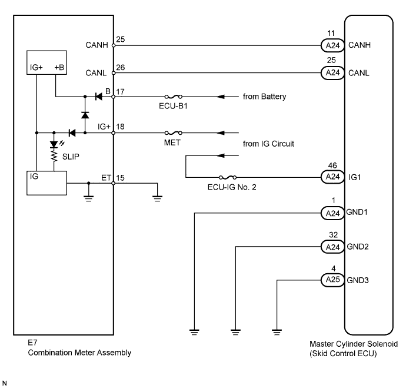

The SLIP indicator light blinks during VSC, A-TRC, CRAWL, downhill assist control or hill-start assist control operation. When the system fails, the SLIP indicator light comes on to warn the driver (Click here).
WIRING DIAGRAM

INSPECTION PROCEDURE
Refer to "Slip Indicator Light Remains On" (Click here).